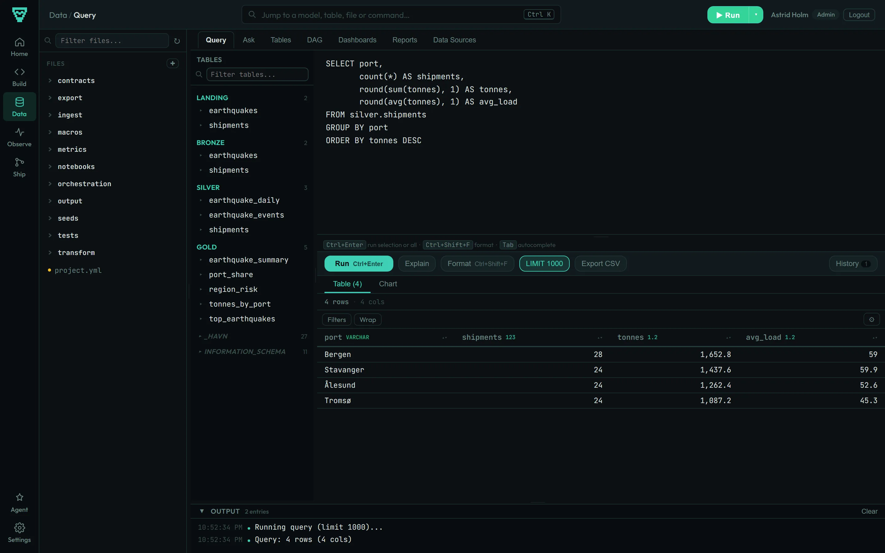

A data platform that fits in one file.
havn loads your data with Python, models it with plain SQL and serves it through a web UI. Everything runs on DuckDB, and the whole warehouse is a single file on a machine you control.
havn is Norwegian and Danish for harbour. It is made for teams whose data fits on one server, which is most of them, and who would rather not rent a cluster to find that out.
- 1 file
- holds the whole warehouse
- 1 package
- no services to run beside it
- 14 connectors
- databases, SaaS APIs, files
- ~3 seconds
- to load and build the sample project
A model is a SQL file.
One line of @config at the top, then a SELECT.
havn reads the FROM and JOIN clauses to work out
the order to build things in. There is no templating language and no
compile step.
Each run rebuilds only what changed: the SQL itself, anything upstream of it, or new data loaded since the last build. Assertions run right after the build, and a failing one stops the models below it.
@config materialized=table, schema=gold @description Shipments and tonnage per port. SELECT s.port, COUNT(*) AS shipments, round(SUM(s.tonnes), 1) AS tonnes FROM silver.shipments s GROUP BY s.port ORDER BY tonnes DESC
# a second batch of shipments lands $ havn run ingest/shipments.py done shipments.py (4ms) # the new rows reach gold, no --force needed $ havn transform skip bronze.shipments done silver.shipments (75 rows, 2ms) done gold.tonnes_by_port (4 rows, 5ms) $ havn query "SELECT * FROM gold.tonnes_by_port" Bergen 21 1239.6 Stavanger 18 1078.2 Ålesund 18 946.8 Tromsø 18 815.4
What comes with it
Everything below ships in the one package, and each part works from both the command line and the web UI.
| Loading data | Python scripts with a database connection ready to use, plus connectors for Postgres, MySQL, Snowflake, BigQuery, Redshift, Databricks, Stripe, HubSpot, Shopify, Google Sheets, S3, CSV, REST and webhooks. | havn connecthavn run |
|---|---|---|
| Modelling | SQL models as views, tables, incremental tables (merge, append, delete+insert, microbatch) or SCD2 snapshots. Graph selectors such as +gold.orders and tag:daily. | havn transform |
| Testing | Inline assertions, YAML contracts, unit tests with fixture rows, and a bind pass that catches unknown columns and type errors before anything runs. | havn checkhavn test |
| Shipping | Environments with their own warehouse file. Deploy plans that show what will rebuild, a pre-deploy snapshot, and rollback when a deploy fails. | havn deploy prod --plan |
| Reviewing | Row-level diffs of what a change does to each table, column lineage, and generated GitHub Actions that post the diff on pull requests. | havn diffhavn ci generate |
| Running | Jobs defined in YAML, cron schedules, retries, a file watcher, and Slack or webhook alerts. | havn jobs run |
| Exploring | A SQL editor with autocomplete, a table browser, the model graph, notebooks, dashboards and a metrics layer. | havn serve |
| Access | Users with admin, editor and viewer roles, column masking rules for personal data, and an audit log. | havn serve --auth |
| Recovery | Verified backups and restore points for the whole warehouse. | havn backuphavn rewind |
| AI assistants | An MCP server, and context files for Claude Code, Cursor and Copilot in every new project. | havn mcp |
For the parts that are still missing or rough, see What havn supports.

Who it is for
Teams that have outgrown spreadsheets and CSV exports but do not need, or want to pay for, a cloud warehouse sized for data they will never have.
A single DuckDB file handles hundreds of millions of rows on an ordinary server. You can back it up by copying it and open it with any DuckDB client.
Where it stops
- One machine does the work. There is no distributed compute.
- The DuckDB file allows one writer at a time. Reads run alongside it.
- Data well beyond a single disk belongs in a bigger system.
Running it
havn Core
On your own hardware
Install it from PyPI or run the Docker image on a laptop, a server or your own cloud account. It is free to use inside your company, including in production. The source is published under the Business Source License 1.1, and each release becomes Apache 2.0 after four years.
havn Cloud · in development
Hosted in Norway
A managed instance on Norwegian infrastructure run by a non-US company, with a fixed monthly price. Follow the repository for news.
Try it on the sample project
Python 3.10 or newer is the only requirement. The sample loads earthquake data from the USGS feed.
pip install havnhavn init my-projectandcd my-projecthavn jobs run full-refreshto load and build everythinghavn serveand open localhost:3000
With Docker instead:
docker run -v "$(pwd)":/project -p 3000:3000 ghcr.io/chraltro/havn